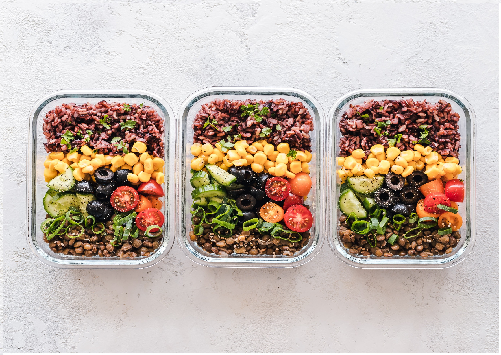

When people aim to become either more lean or bulkier, they forget the most crucial factor that will assist in their journey, and that is eating correctly. A proper meal plan is as important as working out consistently, if you dont eat right you wont be able to see the changes you are expecting in your body.
It is more efficient to plan your meals throughout the week creating meal preps for each meal you'll consume in a day. Doing this removes the worry of deciding on what to eat each day. And to keep interesting and not eating the same meal every week, switch up your meal every week to prevent yourself from being unsatisfied with your meals. Just make sure to balance out your proptions to make sure you get the right nutrients! A guide to an ideal of a proper healthy according to Harvard's Medical School will be located at you right. But don't let that stop you from creating your own this is just an ideal of a perfect healthy meal.

As you can see, vegetables and fruits covers more the plate more then the other substances. Filling yourself with vegetables and fruits will help prevent you from being hungry later on in your day and falling to eating junk food as a snack. And also vegetables are a good source of dietary fiber that will help pass food throughout your digestive system. It will help increase vitamin and mineral absorbtion in your body, which will increase your daily energy levels.
Whole grains such as brown rice, whole-wheat bread, oats, etc. Whole grain foods are filled with protein, fiber, vitamin b, antixidants and many more. A rich diet in whole grains can reduce chances of getting medical diseases.
Protein is a big factor when it comes to your diet. That is because protein helps your body repair cells and make new ones. Which help develop growth at a young age. So after an intense workout, protein helps repair those muscles cells and develops new ones in order for your muscles to become bigger in mass.
In your diet, you will still need a small amount of fat in your diet in order for healthy functioning. Oils provide calories and essential fats-soluble vitamins such as A, D, E and K. As for drinks, it is important to keep yourself hydrated. You can drink water, tea and coffee but, just limit your intake of dairy products. And stay away as much as you can from sugary drinks.